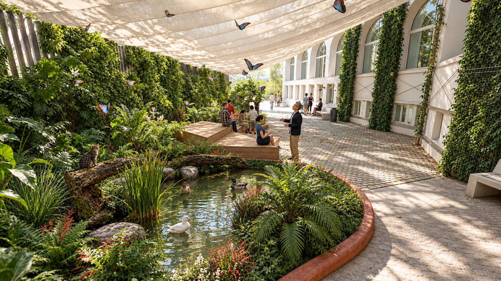

Ayuntamiento · Bilbao
Propuestas de infraestructura verde y renaturalización del espacio público en Bilbao.

El trabajo en el Ayuntamiento
Trabajo de arquitectura y paisaje urbano en el área de Movilidad y Sostenibilidad del Ayuntamiento de Bilbao. Las propuestas abordan la incorporación de vegetación, sombra y nuevos usos al espacio público existente.
Los trabajos incluyen la cubierta verde de Ugarteko Plaza, la barrera acústica vegetal de San Ignacio, los huertos urbanos de Arbolantza y el Plan de Acción para la renaturalización de patios escolares.
Qué hice
- Diagnóstico y propuestas de paisaje urbano e infraestructura verde.
- Diseño de la cubierta verde de Ugarteko Plaza.
- Análisis del potencial renaturalizador de centros escolares municipales.
Sombra y vegetación · Ugarteko Plaza
Espacio de estanciaSombra, vegetación y espacios de estancia para mejorar el confort y el uso cotidiano de la plaza.

Barrera acústica vegetal · San Ignacio
Infraestructura verdePropuesta de barrera acústica vegetal integrada en el espacio urbano de San Ignacio.

Huertos urbanos · Arbolantza
Paisaje y uso comunitarioOrdenación de las parcelas de cultivo, recorridos peatonales y accesos de los huertos urbanos.